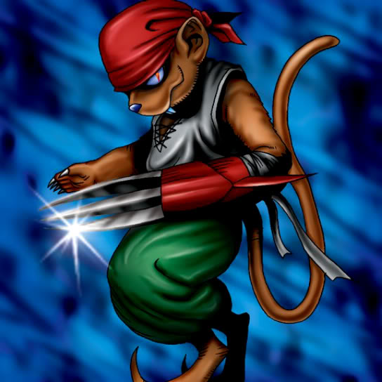

Burglar

STATS
ATK: 850
DEF: 800DECK COST
Deck Cost per Card: 17Fusion List (7 Possible Fusions)
- Burglar + Arlownay = Flower Wolf
- Burglar + Bat = Giga-tech Wolf
- Burglar + Firegrass = Flame Cerebrus
- Burglar + Flame Ghost = Flame Cerebrus
- Burglar + M-Warrior #1 = Tiger Axe
- Burglar + Mushroom Man = Flower Wolf
- Burglar + Queen's Double = Nekogal #2